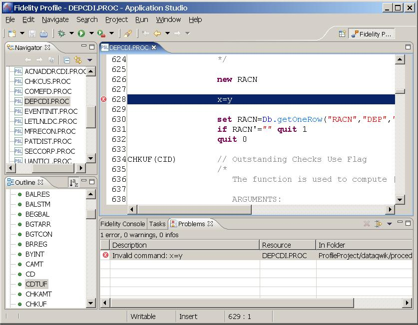

The Fidelity Profile Integrated Development Environment (Profile
IDE) is a plug-in which provides fully integrated components tailored for
developers of Fidelity Profile Application functionality. The Profile IDE
includes editors for PSL (Profile Scripting Language) and GT.M, outline views
for browsing program line tags, connection settings and connection management
to Profile Runtime Environments (Profile RTE).
